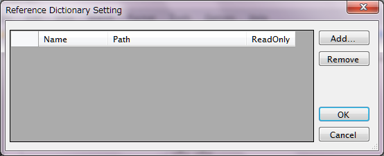
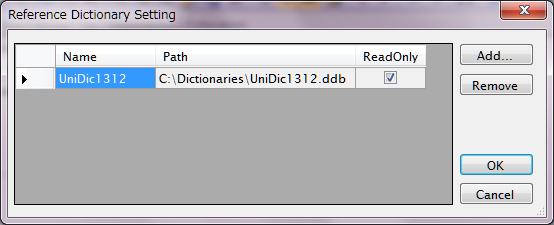
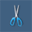
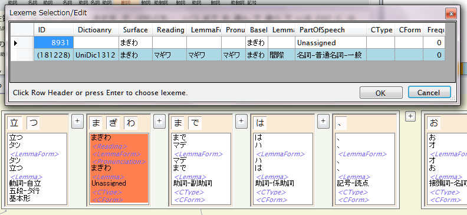

"Dependency"パネルでは、文節・係り受けの編集だけでなく、形態素構造の編集も可能です。
1. 辞書の作成と参照設定
コーパス内に存在する語(Lexeme)はChaSenやMecab出力からインポートを行ったときに見つかった語しか含んでいませんので、それだけだと満足な形態素の修正を行うには不足します。そこで、ほとんどの場合、最初に「辞書」を作成して参照するように設定する作業が必要となります（必須というわけではありません）。
辞書の作成については、別項目"辞書を作成する"を参照して下さい。ここでは、例えば"UniDic1312.ddb"という名称の辞書が既に作成されているとします。
作成した辞書を参照用に設定するには、メニューから"Options - Reference Dictionary Setting"を選択して下さい。 次のようなダイアログが表示されます。

"Add..."ボタンをクリックして、"UniDic1312.ddb"ファイルの存在する場所からファイルを選択します。

この操作を繰り返して、複数の辞書を同時に参照するように設定することもできます。行ヘッダをクリックして"Delete"ボタンをクリックすると辞書参照を解除することができます。なお、今のところ辞書は"ReadOnly"でのみ参照可能です。
設定が完了したら"OK"ボタンをクリックします。
2. Dependencyパネルを使った形態素編集
基本的なパネルのユーザーインターフェイスは文節・係り受け編集の場合と同じです。
(1) "Morphemes"表示に切り替える
Dependencyパネルのツールバーから、 ボタンをクリックして"Morphemes"表示に切り替えます。
この表示モードにおいても、文節・係り受けの編集機能は"Horizontal"の場合と同様に使用することができます。
ボタンをクリックして"Morphemes"表示に切り替えます。
この表示モードにおいても、文節・係り受けの編集機能は"Horizontal"の場合と同様に使用することができます。
(2) 語を接合する（語境界を削除する）
語Boxの間に表示される"＋"ボタンをクリックすることで、隣り合った2語を接合することができます。文節を接合するための"+"ボタン（語Boxの外にある）と取り違えないように注意して下さい。接合した結果できる語は、この時点では形態素が正しくアサインされない不完全な状態であり、背景が赤色の状態で表示されます。正しい形態素にするには(4)のLexemeのアサインを行います。
なお、文節をまたがる語は作れませんので、文節をまず接合してから語を接合します。
(3) 語を分割する（語境界を作成する）
語を分割するには、語Boxの文字の間にマウスカーソルを移動して、カーソルがの形に変わった状態で左クリックします。 (2)と同様、分割されてできた2つの語は不完全な状態であるため、続いてLexemeのアサインを行います。
(4) 語に対してLexemeをアサインする（関連付ける）
語の持つ形態素情報であるLexemeを変更する（(2), (3)で一時的にできた不完全な語に辞書からLexemeをアサインするのもこの特殊な場合です）には、語Boxの中でマウスを左クリックします。すると、Lexemeの候補一覧を示すダイアログが表示されます。この時に、上で参照設定した辞書が使用されます。

この表には、コーパス本体のLexiconと参照設定した辞書のすべてから、選択した語の表層形と一致するLexemeを検索した結果（候補一覧）が表示されています。背景が灰色はコーパス本体にあるもの、青は参照用辞書にあるもの、白は形態素編集過程で新たに発生したものを示します。白の行のみは編集可能です。
- 候補は品詞によりソートされて表示されます。
- 基本9プロパティが一致する語は同じ語であるとみなし、最初に見つかった候補のみが表示されます。その際、コーパス本体にあるものが参照辞書に優先され、参照辞書間では上に登録されたものが優先されます。
背景が白の行は、新語を登録するのに使うことができます。
- PartOfSpeech, CForm, CTypeの各セルについては、マウスの右クリックを行うことにより、リストから選択することができます。
- PartOfSpeech, CForm, CTypeを独自に入力することもできます。その場合、コーパスのLexiconにそれらのタグが自動追加されます。
- Surfaceは編集不可です。
行のヘッダをクリックするか、セルを選択して"OK"ボタンをクリックすることにより選択行の候補が選ばれて、元の語に関連付けられます。Escまたは"Cancel"ボタンで操作をキャンセルしてDependencyパネルに戻ることができます。
なお、参照用辞書の候補を選択すると、そのLexemeはコーパスのLexicon内にコピーされます。
以上の3つの操作と、必要に応じて文節に対する操作を適宜組み合わせることにより、任意の形態素構造に変形することが可能です。
分割・接合を繰り返したり新語の登録をUndoしたりすることにより、最終的な結果には無関係の過渡的なLexemeが発生しますが、これらはセーブ実行時にクリーンアップされます。すなわち、セーブまでの一連の操作に関係した全Lexemeについて、最終的に語にアサインされていないもの（かつ、他のLexemeのBaseになっていないもの）は自動的にDBから削除されます。 また、一連の操作に関係した全Lexemeの頻度情報(Frequency)もセーブ時に再計算されます。（候補一覧ダイアログに表示されるFrequencyは操作を始める前のものであり、操作の影響を反映しません。）